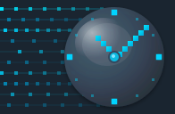

Light Background Preview

Main Logo (128x128)
Medium (64x64)
Favicon (32x32)
Color Palette
#2c3e50 Dark Slate
#00d4ff Electric Cyan
#34495e Metal Gray

Main Logo (128x128)
Medium (64x64)
Favicon (32x32)
Dark Theme (128x128)
Medium (64x64)
Favicon (32x32)
The logo has been integrated into Sphinx documentation:
docs/conf.py updated with logo pathscd docs make clean make html open _build/html/index.html